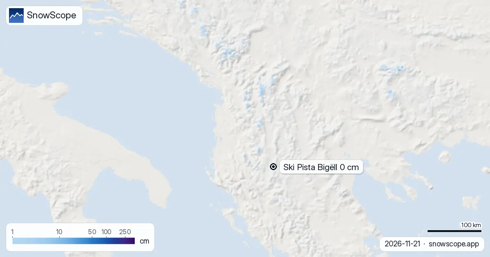
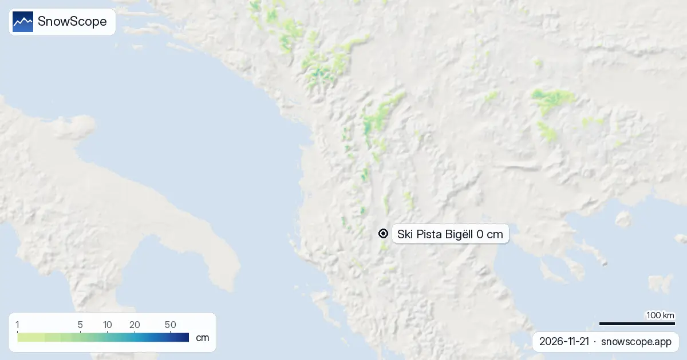

Albania: 34 cm expected in coming weeks, peak snow Monday
Snow is building fast across Albania's high peaks. After 7 cm in the last three days, our model shows up to 34 cm will fall over the next week, with the heaviest push arriving on Monday 23 November.
See the live snow forecast for Ski Pista Bigëll in the SnowScope appSnow depth, powder alerts and the 3D map, free.
The storm coming Monday
Monday 23 November is the turning point. That day alone, our model forecasts 16 cm of new snow across the Albanian ranges. This is the peak of a larger weather system that will bring snow to all high ground from now through early December.
In the first three days (to 24 November), we expect up to 18 cm. Over the full seven days ahead, the total could reach 34 cm in the snowiest areas. This is the main winter weather window for the next two weeks.
| Resort | Snow depth | New snow, 72 h | Coming, next days | Top |
|---|---|---|---|---|
| Ski Pista Bigëll | 0 cm | 0 cm | 1 cm | 1,678 m |

Where the snow is falling now
The mountains already have snow cover above 1900 m, where our model shows 560 km2 white today, up from 340 km2 yesterday. Mount Korab, the Albanian Alps, and Mount Tomorr have all gathered 15 to 16 cm in the past three days.
At 2000 to 2500 m, mean snow depth is 3 cm. Above 1500 m, nearly one-fifth of the land is covered. Below 1500 m, the ground is still bare.

What lies ahead: the week in outline
Snow will start falling tomorrow, 22 November, and intensify into Monday. After Monday's peak, further snow is likely but lighter. By early December, we forecast another 19 cm across the second week, though spread over more days and with lower intensity.
The ski resort Ski Pista Bigëll, at 1678 m, sits just below the main snow line today. In the next three days, our model gives it only 1 cm, as most snow will fall above 1800 m. As the week progresses and storm snow reaches lower elevations, that picture may improve.
How fast the snow is building
One week ago, only 120 km2 of Albania was white. Today, that is 560 km2, a fourfold increase in seven days. Yesterday alone, 220 km2 gained snow cover. This is exactly what happens when the dry season breaks and the first proper winter system moves in.
The speed of growth shows how thin the base is now. Early-season snow on bare ground often melts or settles fast. Rocks are likely visible through thin patches on south-facing slopes below 2000 m.
Nearby mountains: the same story
Montenegro to the west has 11 cm at its leading resort and can expect 32 cm in the next week. North Macedonia to the east shows less snow now but forecasts 26 cm ahead. The whole region is entering the same storm window together.
How certain are we
Early-season forecasts are less stable than mid-winter ones, and this model snapshot is from today. The Monday peak is a solid feature in the weather pattern, but exact amounts and timing may shift. Watch for updates over the weekend.
Tips for skiers
- High ground above 2000 m will see the best accumulation Monday and beyond. Plan travel to high passes for after the peak, not during it.
- Below 1800 m, early-season snow is thin. Expect rocks and bare patches, especially on sunny slopes. Wait a few days for consolidation and further accumulation.
- Snow line sits near 1900 m today. It will drop as cold air arrives, but expect variation between north and south exposures.
- Mountain weather can change quickly. Check local forecasts and official avalanche bulletins before heading off-piste, especially on Monday when fresh snow is loading slopes.
- Track our snow map over the next week to see which peaks and valleys fill in first as the system moves through.
About these numbers
Resort snow depths are the deepest snow on the resort's upper slopes from the SnowScope snow model (about 1 km, run of 21 November); they are estimates for an area, not a measurement at one point. Station values are measurements on the date shown. Forecasts can change. Always read the official avalanche bulletin before going off-piste.
Cite this report
For research, teaching or the press: the numbers and charts are free to reuse under CC BY 4.0 with this citation.
SnowScope (2026), Albania: 34 cm expected in coming weeks, peak snow Monday, https://snowscope.app/blog/en/2026/11/albania-snow-on-the-way-21-november-2026.html, accessed 2026-11-21
SnowScope (Atlas Labs). (2026, November 21). Albania: 34 cm expected in coming weeks, peak snow Monday. SnowScope snow reports. https://snowscope.app/blog/en/2026/11/albania-snow-on-the-way-21-november-2026.html
BibTeX
@misc{snowscope2026albaniasnowontheway21nov,
author = {{SnowScope (Atlas Labs)}},
title = {Albania: 34 cm expected in coming weeks, peak snow Monday},
year = {2026},
month = nov,
howpublished = {\url{https://snowscope.app/blog/en/2026/11/albania-snow-on-the-way-21-november-2026.html}},
note = {Published 2026-11-22 10:03 UTC; accessed 2026-11-21}
}· CC BY 4.0 · Methods, data and tools →
Ski Pista Bigëll: snow and temperature by height, this winter vs last (tools) →
Follow Ski Pista Bigëll
Free: a message when fresh snow is coming, and the forecast every morning.
More snow reports

Snow is falling on Slovenia's ski mountains today: about 37 cm on Kanin and 21 cm on Krvavec. Where the snow lies, how it compares with past winters, and the next snowy day.

Tornik on Zlatibor had up to 39 cm on its upper slopes on 15 November 2026; by Wednesday it had melted. Kopaonik barely turned white. The week day by day and what comes next.

December snow odds from 46 winters and checked day prices: Ski Cooper $49, Les 3 Vallées €75.70, Oukaïmeden no official tariff. Where a cheap December ski day works.